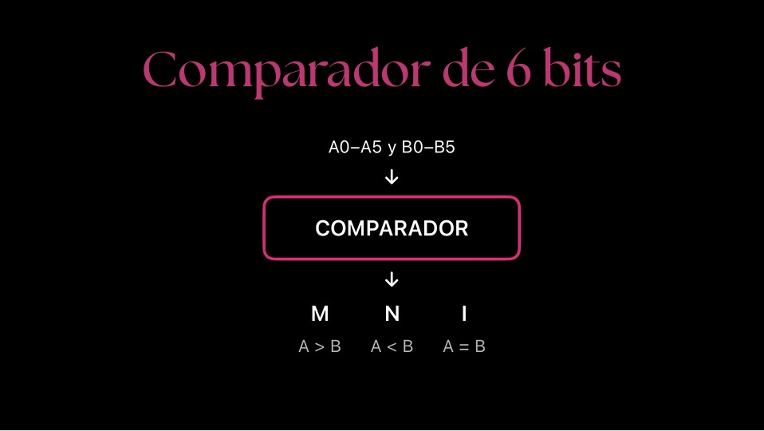

Instanciación
> Programa del restador y comparador de 6 bits
Arquitectura del Circuito
Estructura: Restador de 6 bits

El circuito se compone de un Medio Restador (R0) para los bits menos significativos (LSB) y cinco Restadores Completos (R1-R5) conectados en cascada mediante el préstamo (P)[cite: 13].
Estructura: Comparador de 6 bits

Toma las entradas A0-A5 y B0-B5 y evalúa si A>B (M), A<B (N), o A=B (I)[cite: 14].
Diseño Lógico
Ecuaciones de diferencia (D) y préstamo (P) para el restador en paralelo:
Bit 0 (Medio Restador):
P0 = A0' · B0
D0 = A0 ⊕ B0
Bit 3 (Restador Completo):
P3 = A3'·P2 + A3'·B3 + B3·P2
D3 = A3 ⊕ B3 ⊕ P2
Bit 1 (Restador Completo):
P1 = A1'·P0 + A1'·B1 + B1·P0
D1 = A1 ⊕ B1 ⊕ P0
Bit 4 (Restador Completo):
P4 = A4'·P3 + A4'·B4 + B4·P3
D4 = A4 ⊕ B4 ⊕ P3
Bit 2 (Restador Completo):
P2 = A2'·P1 + A2'·B2 + B2·P1
D2 = A2 ⊕ B2 ⊕ P1
Bit 5 (Salida Final):
Psal = A5'·P4 + A5'·B5 + B5·P4
D5 = A5 ⊕ B5 ⊕ P4
Código VHDL
LIBRARY IEEE;
USE IEEE.STD_LOGIC_1164.ALL;
USE IEEE.STD_LOGIC_ARITH.ALL;
USE IEEE.STD_LOGIC_UNSIGNED.ALL;
ENTITY restador_comp_6bits IS
PORT (
A0,A1,A2,A3,A4,A5 : IN STD_LOGIC;
B0,B1,B2,B3,B4,B5 : IN STD_LOGIC;
D0,D1,D2,D3,D4,D5,Psal : OUT STD_LOGIC;
M, N, I : OUT STD_LOGIC
);
END restador_comp_6bits;
ARCHITECTURE BEHAVIORAL OF restador_comp_6bits IS
SIGNAL P0,P1,P2,P3,P4, P_final : STD_LOGIC;
SIGNAL EQ0, EQ1, EQ2, EQ3, EQ4, EQ5, ALL_EQ : STD_LOGIC;
BEGIN
-- Lógica del Restador
P0 <= (NOT A0) AND B0;
D0 <= A0 XOR B0;
P1 <= ((NOT A1) AND P0) OR ((NOT A1) AND B1) OR (B1 AND P0);
D1 <= A1 XOR B1 XOR P0;
P2 <= ((NOT A2) AND P1) OR ((NOT A2) AND B2) OR (B2 AND P1);
D2 <= A2 XOR B2 XOR P1;
P3 <= ((NOT A3) AND P2) OR ((NOT A3) AND B3) OR (B3 AND P2);
D3 <= A3 XOR B3 XOR P2;
P4 <= ((NOT A4) AND P3) OR ((NOT A4) AND B4) OR (B4 AND P3);
D4 <= A4 XOR B4 XOR P3;
P_final <= ((NOT A5) AND P4) OR ((NOT A5) AND B5) OR (B5 AND P4);
Psal <= P_final;
D5 <= A5 XOR B5 XOR P4;
-- Lógica del Comparador
EQ0 <= NOT (A0 XOR B0);
EQ1 <= NOT (A1 XOR B1);
EQ2 <= NOT (A2 XOR B2);
EQ3 <= NOT (A3 XOR B3);
EQ4 <= NOT (A4 XOR B4);
EQ5 <= NOT (A5 XOR B5);
ALL_EQ <= EQ0 AND EQ1 AND EQ2 AND EQ3 AND EQ4 AND EQ5;
I <= ALL_EQ; -- A = B
N <= P_final; -- A < B (Préstamo final activado)
M <= (NOT P_final) AND (NOT ALL_EQ); -- A > B
END BEHAVIORAL;
Conexión a tarjeta MAX II (Configuración en Quartus)
Creamos un nuevo proyecto, elegimos la carpeta donde lo vamos a guardar y le ponemos un nombre relacionado con lo que estamos trabajando (ej. restador_comp_6bits), para tenerlo bien identificado.
Seleccionamos la opción Empty project para crear un proyecto desde cero, sin archivos ni diseños previos. Esto nos permite agregar nuestro propio código y configurar el circuito.
Como no tenemos proyectos anteriores para agregar, dejamos esta parte vacía y simplemente damos clic en “Next” para continuar.
Seleccionamos el tipo de tarjeta en la sección Device Family, eligiendo MAX II. En Pin count, seleccionamos 100 pines. En Available devices, buscamos el modelo exacto impreso en la placa para evitar errores.
Seleccionamos el lenguaje de programación que vamos a utilizar para el proyecto, en este caso, VHDL.
Al terminar este proceso, aparecerá una pantalla con un resumen de todas las opciones que seleccionamos. Revisamos que todos los datos sean correctos antes de continuar.
Una vez terminado el proceso, nos dirigimos a la opción New File y seleccionamos VHDL File, donde escribimos el código VHDL proporcionado anteriormente y comenzamos con la compilación.